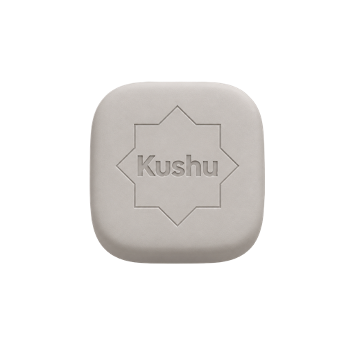
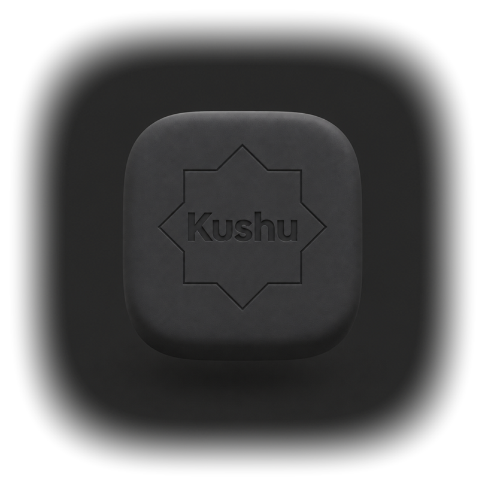
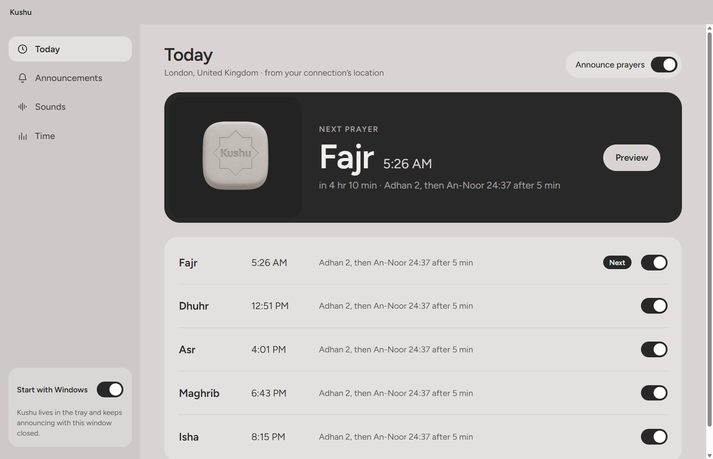
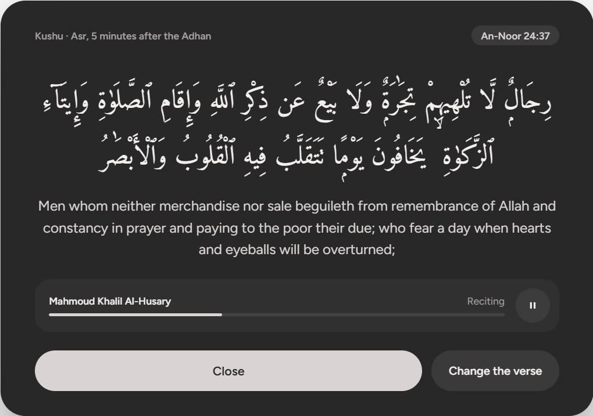

Blocks what you choose
Pick the apps that pull you away. During a session they wait until your reading is done.
For iPhone, Android, Windows and Mac
Kushu opens the mushaf and holds your other apps until your reading is done. On your computer, it calls you to each prayer.

How it works
Five minutes or an hour. Tap once and the time is set aside.
The Madani mushaf, page for page as it is printed, with each surah a tap away.
Open an app you chose to block and Kushu brings you back to your page.
Sign in on both, and while you read, every screen on your computer goes dark until you’re done.
Fifteen minutes, two hours, or any length you set. Only the clock or your phone opens it again, not the computer.
After Fajr, at lunch, before bed. Kushu reminds you on your phone, and your computer locks at the same time.
The Adhan in the middle of your screen, with how long it’s been since the last prayer. A verse follows a few minutes later, recited.
Time in each app, today and across the week, with a small pill that floats over your work.
Set a daily limit. Past it, Kushu covers the app with a verse, and you move on.

While a session runs, the room goes dark and quiet. Here is what holds it.
Pick the apps that pull you away. During a session they wait until your reading is done.
Register a card, a sticker or a book’s barcode. Leaving early means getting up to scan it.
Set the days and times you read. Kushu reminds you, and the session is ready.
The Adhan at each prayer, in the middle of the screen, and a verse a few minutes after.
Give an app its time. Past it, Kushu covers the app with a verse and the time you spent.
No feed, no ads, no streak pressure. Just the page, and a record of the time you kept.
On your computer
Kushu sits quietly in the tray. At each prayer it puts the Adhan in front of you, then a verse a few minutes later, recited. It also keeps count of the time in each app, so you can see where the day went.


On your phone to read, on your computer for the prayers. Both, for the whole day.
Blocks apps with Apple’s Screen Time.
App StoreInstalls straight from here. Your phone will ask you to allow it.
Download for AndroidWindows 10 and 11. Updates itself.
Download for WindowsApple silicon and Intel.
Download for Mac Mac with Intel?